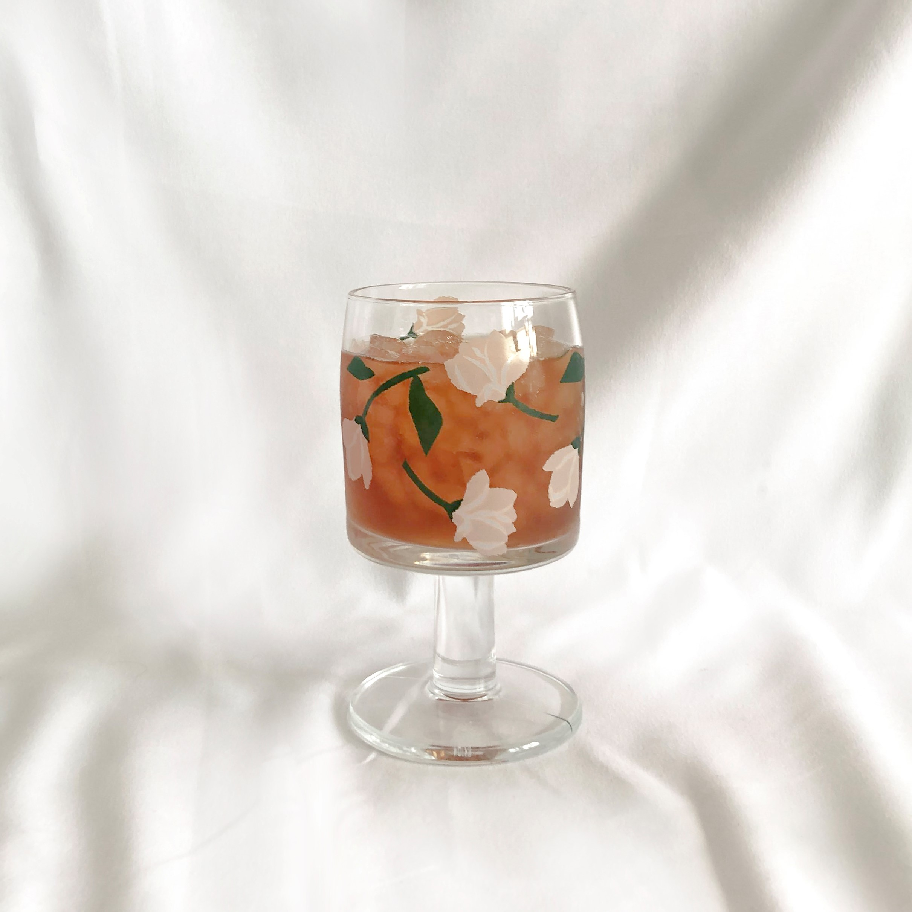
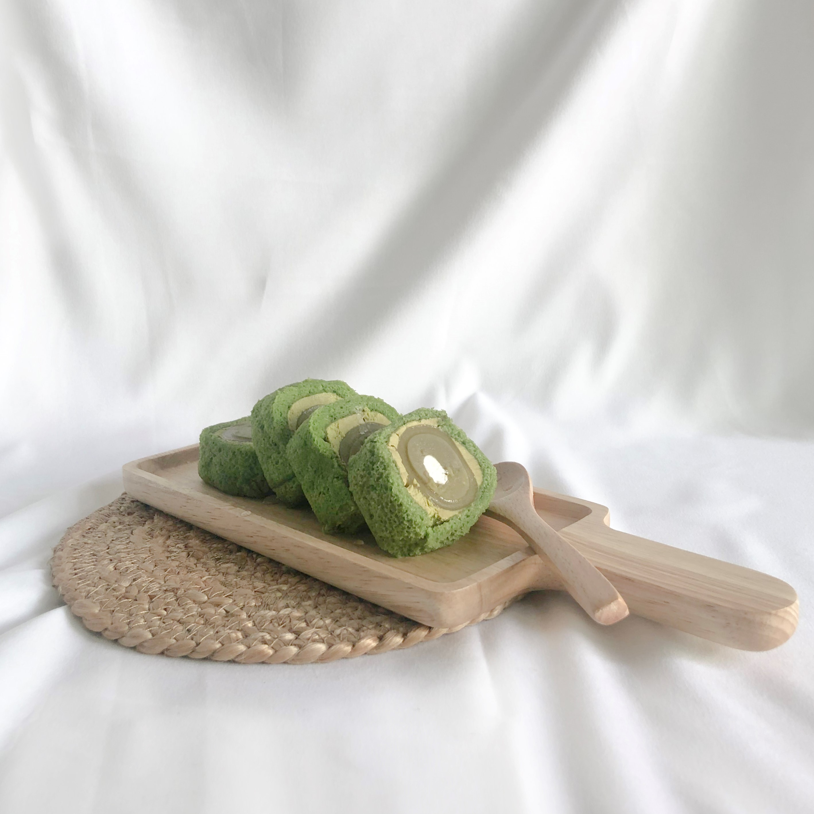
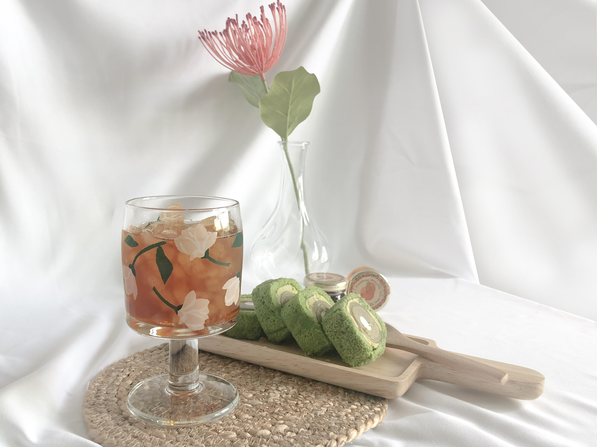

Review
Product
Main
Small Luxary for me
작은 소품으로 꾸며보는 홈카페 체험후기
Products
상품구성
빈티지컵 / 우드플레이트 / 우드스푼 / 라탄매트 / 흰천 / 조화 한송이
 
Review
후기

카페 가기는 돈이 아깝고 집에서 카페 분위기는 내고 싶을때,
“방구석 홈카페” 패키지를 이용하면 딱일 것 같다.
아무것도 고민할 필요 없이 음식과 음료를 키트에 담으면 되니까.
이 패키지만으로 홈카페를 3분만에 완성 시킬 수 있었다.
좋아하는 음악을 잔잔히 틀어놓고 음료와 음식을
세팅해서 즐기니 기분이 전환되는듯 하였다.
익숙했던 나만의 공간이 새롭게 다가왔다.